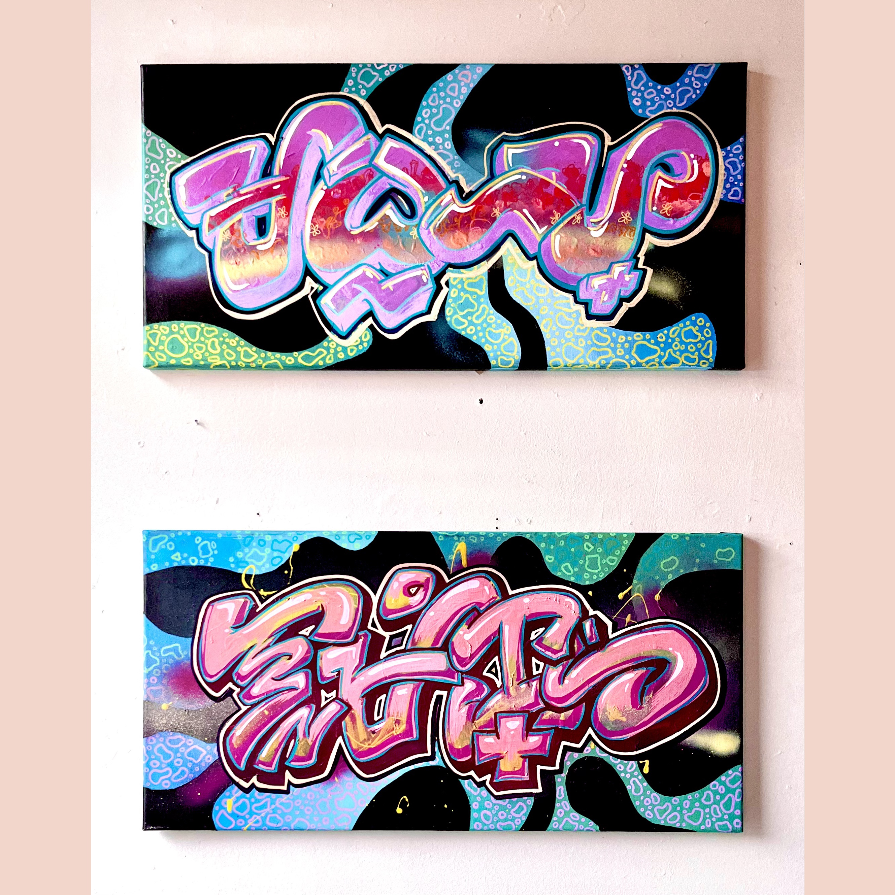

Noa has worked as a sign artist for longer than me at Trader Joe's although she recently left the company. Her delicate lettering constantly catches my eye in the store. Click on her name to see more of her work. Here is her interview:
Joy has worked as a sign artist at Trader Joe's for the longest period of time. Her vibrant signs always stand out to me when I see them in the store. Click her name for more of her work. Here is her intereview:


I am a newer member of the art team at work, and have been learning and my developing my signage style for a few months now. I'd like to think my signs stand out for being colorful and a little chaotic. Click on my name for a link to more of my work! Here is my interview:
Music: "TOMORROW- piano jazz version" by Angus & Friends is licensed under CC BY-ND 3.0.